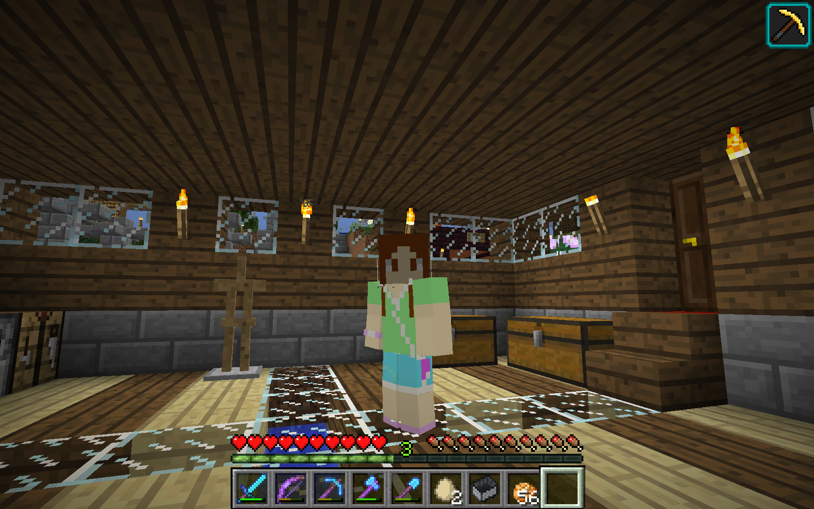

IKwebsWebs for Kids
Here I would like to explain a bit about me. But not personal stuff, obviously! But I will write down what I love and hate after.
First thing is first; usernames. I don't really know how many usernames I have, but if you ever play online, you MIGHT see a username starting with IK. If you do, take note, it is me.
Things I love: One thing I really like is books. Some people might say reading is dead boring, but I could spend a whole day reading.C=. My favorite book collections are these: Cronicas de la Torre and Princesas del Reino de la Fantasia, both spanish. Then are the videogames. My favorite videogame is Minecraft, but I also like games like Geometry Dash, Lara Croft and Minion Rush. Of the sports, there is only one I like: Basketball. And of the school subjects, I do have a lot; Maths, literacy, ICT, PE only some days, reading and music. Music is, for me, the most beautiful sound ever (depending on the song). I love so much music and to sing, sometimes my friends say I have a such lovely singing voice that I should go to a talent show. My favorite songs are Promise from Minecraft Parody and Star Trek Main Theme, from the film Star Trek: Into Darkness which is my favorite film.
Things I hate: So much chatting (I mean, writing) about what I like but what about what I DON'T like? Something I hate is FOOTBALL.>=C Football is DEAD BORING. Like Pokemon Go. I've even heard Pokemon Go is a dangerous videogame, because people get so hooked to it that when they cross the road playing it without paying attention that accidents happen. Then I also hate some PE leasons, because we have to run 400 metres and, soon enough, 800 metres.<=C.
By the way, if you're wondering why I'm using smiley thingies, is because I like it.C=. They're so cute!

Click the image to see my other skins. I made them myself, and it's a bit like my real aspect, clothes and all.